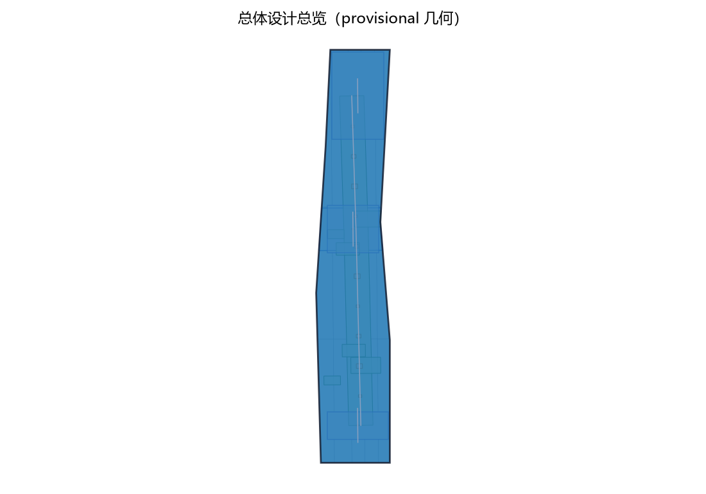
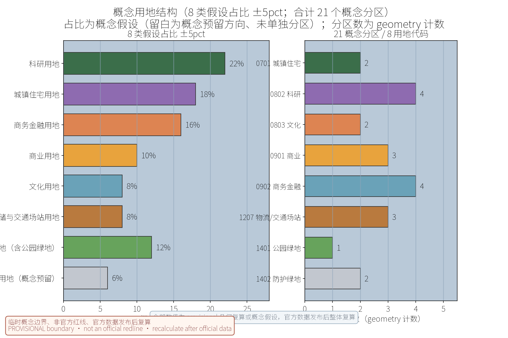
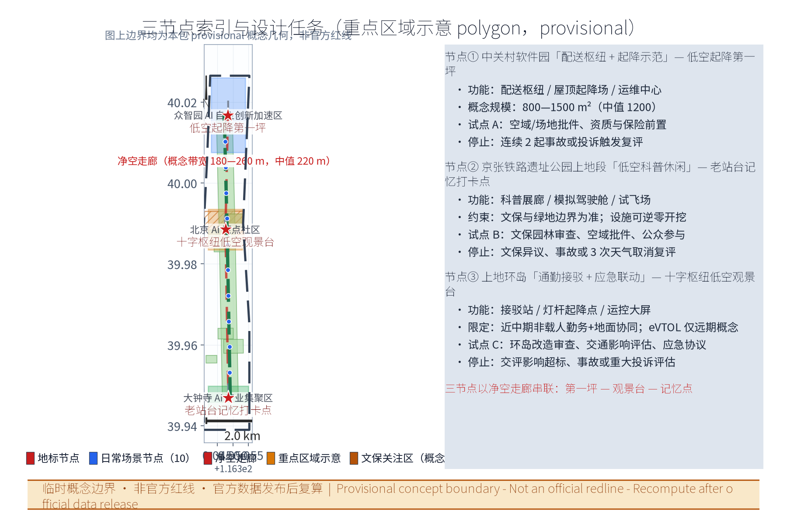
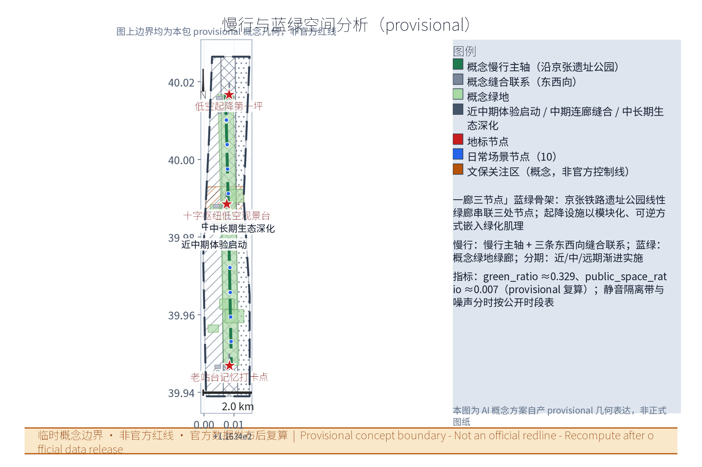
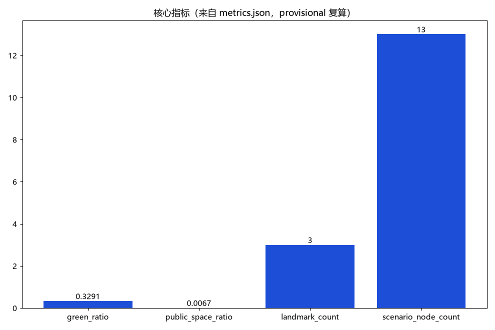

上地智翼·低空生活圈：低空经济节点融入职场日常公共空间
以上地—中关村软件园为核心，以「三节点+十场景」将低空经济（配送、通勤接驳、应急、科普）嵌入职场人日常公共空间：中关村软件园配送枢纽与低空起降第一坪、京张铁路遗址公园上地段低空科普走廊、上地环岛通勤接驳与应急联动十字枢纽；强调平急两用、存量更新、可逆化设施与净空安全，全部为概念建议，基于 provisional 边界。
方案名称与总体构想（概念）
方案名称：上地智翼·低空生活圈（Shangdi SkyLink Living Circle）。「上地智翼」取"上地起飞、智联天空"之意，SkyLink 兼指空域链接与通勤链接；「低空生活圈」指以职场人日常公共空间为载体的低空服务网络。核心理念是把低空经济（配送、通勤接驳、应急、科普）平实嵌入既有公共空间，形成「三节点+十场景」的低空生活圈示范体系，追求平急两用、动静结合、可逆更新。三处原创地标节点为「低空起降第一坪」（中关村软件园配送枢纽）、「十字枢纽低空观景台」（上地环岛接驳应急）、「老站台记忆打卡点」（京张铁路遗址公园上地段），形成"新低空与旧铁路"对话的空间叙事。
本方案是面向「百年京张AI创新带」的开放共创概念建议，不替代正式规划，不构成政府审定结论。本方案按任务书三大定位（百年京张文化带、都市AI生活体验带、AI融合创新带）与五大功能（AI全栈自主创新体系、世界级AI创新生态、AI+场景赋能新范式、智能化AI活力城市、AI治理全球话语权）中的低空经济方向展开，作为「AI+场景赋能新范式」的功能载体之一，与感知、调度、测试等能力结合（概念映射），并纳入"三区两翼"的空间协同回路（详见『区域协同与任务书关系』章）。
证据锚点：来源、来源（组织方公告与任务书为文本口径依据）。
品牌与视觉识别方向
品牌层级：主品牌「上地智翼（Shangdi SkyLink）」，副题「低空生活圈（Living Circle）」；节点品牌「低空起降第一坪（First Sky-Landing Pad）」「十字枢纽低空观景台（Cross-Hub Sky Viewing Deck）」「老站台记忆打卡点（Old Platform Memory Stop）」；活动品牌「通勤天空日」「低空科技体验周」等（概念建议）。视觉识别方向（Logo 与识别体系均为一带与本方案的概念方向，可被专业设计团队深化，非最终交付稿）：
- 单色优先：Logo 采用单色表述（深空蓝或纯黑/反白双版），便于印刷、刻划与工程标识复用，避免多色依赖；
- 可缩放：以几何符号化构成（而非写实图形），小尺寸（灯杆铭牌、柜机角标）与大尺寸（幕墙、地贴）均保持可辨；
- 翼形轨道符号语汇：以"双翼+铁轨枕木"的意象合一为母题，双翼构成起飞动势，负形嵌入轨道线性元素，呼应京张铁路遗址与低空起降的双重叙事；辅助图形为航线弧线网格与节点圆点，用于灯杆、地面导视与柜机涂装；
- 国际传播适配：图形不依赖汉字即可识别，配套「SHANGDI SKYLINK」字标与隔离区规范，避免文化误读；色彩以深空蓝+银灰为主、信号橙仅作警示点缀；字体方向采用开源授权字体（如思源黑体／开源西文字体），正式应用前完成字体授权核验；
- 商标与在先权利：本方案未完成商标检索与在先权利核验，「上地智翼」「Shangdi SkyLink」等名称的商标注册状态、在先权利与域外冲突情况均如实标注为待核验，正式应用前须由专业机构完成检索评估，本方案不预先声称拥有任何商标权利。
证据锚点：来源（征集规则为权属与合规表述的依据）。
设计依据与资料清单
本方案引用的法规、政策与规划文件均为公开方向性参考，待条目级核验，不构成已确认依据：包括《无人驾驶航空器飞行管理暂行条例》及低空空域管理相关公开规定、《北京市低空经济产业高质量发展行动方案（2024—2027年）》（公开发布文本）、中关村软件园控规及上地片区专项规划的公开报道口径、《京张铁路遗址公园规划设计方案》（公开方案文本），以及无人机起降场建设与运行安全相关公开标准规范。上述条文的正式条款、现行版本与适用边界须逐条核验并另行登记，正式规划设计以政府发布版本为准；本方案不据此作出任何行政许可、审批结论或实施承诺。
资料清单所列地形图、控规图则、权籍与管线普查等均为概念工作底图需求清单（即"待获取项"），并非本包已获取的数据；本包实际使用的全部数据见 sources.json，未获取项已在『风险、版权与合规说明』与假设清单中如实标注。政策机制建议（测试豁免、运营补贴、净空管理办法等）均为概念建议、非现行安排，详见『更新项目清单、实施政策与分期计划』章。
证据锚点：来源、来源（组织方公告与任务书为文本口径依据）。
三层范围工作框架
本方案紧扣「百年京张AI创新带」的智能化AI活力城市与全球人工智能产业高地总体定位，聚焦海淀区上地地区的低空经济工作场景，作为一带低空应用与试飞服务的西段功能板块（概念定位），与沿线轨道站点、产业园区与高校创新带协同呼应。采用「统筹研究—总体设计—重点详设」三层工作框架：统筹研究输出产业方向约束总体设计；总体设计校核的净空与设施布局再落实到节点详设；每层均保留与任务书对应章节的机器可读证据锚点。
两套范围数字的口径（不再混用）：
- 【统筹研究范围】约 11.41 平方公里：即本包 site_boundary 概念包络由 provisional 几何复算的面积值（site_area_sqm≈11412825.4 平方米，见 metrics.json），用于产业与未来城市的方向性研究，覆盖上地—中关村软件园片区并延展至中关村科学城北部腹地；该数字为几何复算的已知数值，但边界本身为 provisional 概念边界，不代表官方红线，官方几何发布后整体复算；
- 【总体设计范围】约 2.1 平方公里（概念测估区间 1.8—2.5 平方公里）：指三节点及其联系走廊的城市设计深化范围，推导依据为"三节点各取 600—800 米服务半径（步行 8—10 分钟）叠加 220 米（概念带宽区间 180—260 米）净空走廊连续界面"后扣除重叠所得的闭合更新空间（概念估算，待官方边界与控规图则复算）。
「十场景」与 scenario_node_count=13 的口径：10 张日常场景卡对应 10 个日常场景节点（geometry 中 scenario_type=scenario_node），3 个产业测试验证场景对应 3 处地标节点的测试验证职能（metrics.json 公式为场景节点 10 + 地标 3），合计 13 个场景节点，详见『AI 创新生态、人才画像与 AI+ 场景』章。
证据锚点：指标、来源（三层范围划分依据任务书官方文本口径）。
区域协同与任务书关系
本主题在任务书体系中的角色：上地智翼·低空生活圈是一带低空经济方向的西段功能板块与场景载体——它在「都市AI生活体验带」上提供可感知、可体验的低空生活样板，在「AI融合创新带」中承担配送、接驳、应急、科普四类 AI+ 场景集成，并为「百年京张文化带」注入"老站台记忆点+低空新基建"的新旧叙事；其空间载体与三区两翼中各功能区的协同关系如下表（概念级协同，均为建议方向，不构成区域间的任何确定安排）：
| 任务书要素 | 本主题的角色（概念级） | 协同方式示例 |
|---|---|---|
| 三大定位 | 承担「都市AI生活体验带」的低空生活界面，贡献「AI融合创新带」的产业场景，以铁路遗址与老站台呼应「百年京张文化带」 | 低空生活圈作为一带体验带上的示范样板，与沿线公共空间连续组织 |
| 五大功能 | 作为「AI+场景赋能新范式」的低空载体，支撑「智能化AI活力城市」的空中服务层，为全栈体系与创新生态提供测试验证场景，参与「AI治理全球话语权」的运行治理演示 | 场景共创、联合实验室、测试验证基地、匿名数据公示 |
| 三区两翼 | 与AI原点社区（创新生态策源）、众智园AI自主创新加速区（全栈体系与治理话语权）、大钟寺AI产业集聚区（智能原生新业态）互接；依托中关村科技服务翼的要素配置与IP资本衔接、小月河场景赋能翼的体验路径组织 | 众智园输出飞控/避障/调度技术标准，本主题输出场景载体与运行样本 |
| 一带重点区域 | 以软件园配送枢纽、遗址公园上地段、上地环岛三节点嵌入一带东西向公共空间链 | 科普走廊与遗址公园AI公共空间组件库共构，大钟寺消费商务场景与本主题配送体验互补 |
| 跨区域协同 | 与北纬社区（区域协同口径按任务书，不作位置断言）、未来科学城、怀柔科学城、经开区及京津冀方向的低空制造、测试与产业资源形成概念级协同 | 测试数据互认、试飞资源互补、供应链协同（均为概念建议方向） |
概念级协同关系清单：众智园（AI全栈自主创新加速区）——本主题的飞控、避障、调度技术接口与其全栈体系对接，测试验证场景提供运行数据样本；AI原点社区——本主题的科普展廊与体验活动承接创新生态的公众化表达；大钟寺（AI产业集聚区）——智能原生消费与商务场景中引入低空配送与巡游体验（概念方向）；北纬社区（以任务书口径为准）——就近的居住社区作为配送试点与居民议事、噪声分时机制的协同对象；未来科学城、怀柔科学城、经开区——在低空制造、测试设施、产业配套层面形成概念级协作方向；京津冀——面向区域内低空航线协同与产业分工的远期概念方向。以上均为概念建议，区域协同的具体机制与承诺以政府正式安排为准。
证据锚点：来源（三区两翼与区域协同口径依据任务书）。
统筹研究范围产业与未来城市研究
统筹研究范围约 11.41 平方公里（provisional 几何复算值，即本包 site_boundary 概念包络；边界与面积均待官方几何发布后整体复算），以海淀区上地片区为核心腹地，向外延展至中关村科学城北部区域。产业研究聚焦低空经济「研发—制造—运营—服务」链条，识别软件园内无人机飞控、人工智能、通信导航等企业的协同机会，提出「研发测试—场景示范—总部孵化」的产业空间组织（概念建议）；未来城市研究预判无人机通勤、即时配送普及后对职住时空、地面交通与公共空间使用方式的改变，提出面向2035年的弹性用地储备与基础设施预留策略（方向性预判，不构成对用地与投资的承诺）。统筹研究为方向性结论，不预设用地结论；其输出的产业方向约束总体设计的设施构成与选址偏好，形成「战略—结构—实施」闭环。
证据锚点：指标、来源（边界为 provisional，研究范围仅作概念示意）。
总体设计范围城市更新与控规深度城市设计
总体设计范围约 2.1 平方公里（概念测估区间 1.8—2.5 平方公里，推导依据见『三层范围工作框架』章），涵盖三节点及其联系走廊。设计遵循控规深度的城市设计方法，对节点定位、净空安全区、起降设施选址、景观界面与街道断面进行系统校核与优化；对控规指标只做校核建议，不预设数值结论。重点处理低空设施与既有城市更新的关系：利用软件园屋顶与停车场上盖增设配送柜机与小型起降点，依托京张铁路遗址公园绿廊布局低空科普走廊，在上地环岛周边完善接驳与灯杆起降网络；设计成果同步校核控规指标，形成图则衔接建议（概念建议，供专业团队深化研究）。


证据锚点：来源、来源。
重点区域详细设计
三节点的起降设施选址均为概念点位，须经空域管理与专业审查后重新落位；节点间的净空走廊（概念带宽区间 180—260 米，中值 220 米，与 geometry 缓冲口径一致；推导依据：常见中小型无人机水平安全间距评估储备叠加两侧慢行退让，具体以官方空域与运营安全数据复算为准）与慢行联系构成完整空间叙事，详细平面与剖面以图册 drawings/a3-booklet.pdf 与 geometry 层表达。
- 节点一：中关村软件园「配送枢纽+起降示范」：设中央配送枢纽、屋顶起降场与运维中心，打造「低空起降第一坪」地标（概念单体规模区间 800—1500 平方米，中值 1200 平方米；推导依据：起降坪+交接等候+安全隔离缓冲+无障碍通道的组合功能面积，待官方控规与场地数据复算），示范楼宇—站点—路径三级配送体系；
- 节点二：京张铁路遗址公园上地段「低空科普休闲」：利用线性铁路遗址设科普展廊、模拟驾驶舱与试飞体验场，保留老站台构筑「老站台记忆打卡点」；文保与绿地约束以官方文保边界为准，设施采用可逆、零开挖设计（概念方向）；
- 节点三：上地环岛「通勤接驳+应急联动」：结合立体化改造设接驳站、智慧灯杆起降点与运控大屏，于环岛上空设置「十字枢纽低空观景台」。
三节点以净空走廊串联，形成「第一坪—观景台—记忆点」的空间叙事；三处地标均按任务书朝圣地标尺度要求控制为集群型、轻量化、可逆的公共设施，不追求大体量。

证据锚点：指标、空间数据（三节点示意多边形来自本包 geometry/key_areas.geojson）。
AI 创新生态、人才画像与 AI+ 场景
方案构建「AI+低空」创新生态，联合园区企业与高校共建联合实验室、数据开放平台与测试验证基地（均为概念建议，不构成对具体企业或运营商的承诺）。五类核心用户画像（与 metrics.json 的 persona_count=5 对应）：①低空产业工程师（高频巡检、试飞验证与数据调试）；②园区通勤者（通勤接驳与即时配送）；③企业管理者（运行监管与成本优化）；④应急管理者（应急投放与联动指挥）；⑤学生访客与亲子研学家庭（科普展廊、模拟驾驶与体验培训）。周边居民与老年人、残障人士、低收入使用者、非智能设备用户、公园安静使用者等群体的需求与旅程详见『公共利益与包容性设计』章。
「十场景」与 scenario_node_count=13 的关系：10 张日常场景卡（下表的卡①—卡⑩）对应 geometry 中 10 个日常场景节点（scenario_type=scenario_node）；3 个产业测试验证场景（表二 T1—T3）与 3 处地标节点（低空起降第一坪、十字枢纽低空观景台、老站台记忆打卡点）的空间载体对应，承担测试验证职能；合计 13 个场景节点，即 metrics.json 的 scenario_node_count=13。
十张场景卡覆盖交通（通勤接驳）、产业（巡检试飞）、公共空间（观景科普）、公共服务（应急投放）、文化（铁路遗产科普叙事）与治理（运行监管与匿名公示）六类领域，AI 能力以辅助身份出现：AI 调度建议、AI 识别仅作聚合分析、AI 预测驱动排程、AI 模型按季度评估、AI 决策一律人工确认。
表一：10 张日常场景卡（概念建议；"人工复核点"均为方案自设的运行治理设计，非监管要求）
| 场景名称 | 目标 | 输入与数据流 | 输出 | 模型能力边界 | 运营与责任主体 | 数据与隐私边界 |
|---|---|---|---|---|---|---|
| 卡① 通勤接驳 | 职住短途接驳，与地铁13号线、昌平线错峰衔接 | 预约订单、起降点状态、气象与空域时段 | 排程建议、起降时序、乘客引导信息 | 仅起降调度与冲突预警辅助，不自动放行；关键指令人工确认 | 园区物业与持证运营企业共担，属地空域与交通部门监管 | 预约信息脱敏，不采集身份与生物数据，匿名聚合 |
| 卡② 外卖快递配送 | 楼宇—站点—路径三级配送，柜机交接、分时错峰 | 订单坐标（脱敏）、柜机空闲状态、航线时段表 | 配送排程与柜机分配建议 | 路径规划辅助，超视距作业须持证并取得批准 | 试点运营企业+柜机合作方，方案自设人工复核点：路线变更、柜点增设 | 仅收货点位与匿名订单量，不关联个人身份 |
| 卡③ 观光导览 | 观景台低空视角导览，预约制、分时开放 | 预约时段、天气条件、班次表 | 导览班次与安全员配置建议 | 航线覆盖辅助解说，不自动飞行 | 公园运营方+体验服务商，监管按公共活动管理 | 预约人数匿名聚合，不建参观行为画像 |
| 卡④ 低空巡检与遥感 | 园区安防巡检与设施体检、现状测绘辅助 | 巡检计划、设施目标坐标（建筑/设备） | 异常告警清单（匿名聚合）、遥感图斑（脱敏） | AI 图像识别仅匿名聚合分析，不作个体识别用途 | 园区物业与专业巡检企业，异常处置人工复核 | 不采集人员面部与个体轨迹，成果人工复核后归档 |
| 卡⑤ 应急投放 | 应急物资投放、平急两用，与应急管理平台联动 | 应急指令、物资清单、禁飞时段检查 | 投放任务单（人工复核后执行） | 辅助路径与投放点建议，不自主决策 | 应急管理部门牵头、持证企业执行，每次任务执行前人工确认 | 任务记录按最小化留存并脱敏，无个体画像 |
| 卡⑥ 午间咖啡配送 | 分时错峰，与地面外卖互补 | 预订单、柜点状态、时段表 | 错峰排单建议 | 调度辅助，超阈值自动暂停并由人工复核 | 商户+试点运营商，点位增设人工复核 | 订单量匿名聚合 |
| 卡⑦ 智慧灯杆共享起降 | 灯杆起降点共享电力通信，动态分配机位 | 机位占用、电力负荷、通信状态 | 机位分配与充电排程建议 | 分配算法辅助，异常人工介入 | 市政灯杆维护单位+运营商 | 设备状态数据匿名，不关联个人 |
| 卡⑧ 空域数据可视化大屏 | 运控大屏呈现匿名聚合空域态势，支撑监管与公示 | 匿名航迹聚合、告警事件流 | 态势大屏与月度公示摘要 | 聚合统计辅助，不定位个体 | 运控中心（园区+监管共管），对外发布人工复核 | 只展示聚合热力，个体轨迹不采集不存储 |
| 卡⑨ 科普研学模拟驾驶 | 面向学生访客与亲子研学家庭预约开放 | 预约人数与场次表、天气条件 | 讲解与服务排期建议 | 模拟器教学辅助，无真实飞行 | 公园运营方+志愿者，培训排期与飞行安全确认 | 仅预约人数与时段，不采集儿童个人信息 |
| 卡⑩ 试飞服务 | 持证合规的试飞体验培训与测试验证 | 学员资质、气象窗口、空域批件 | 培训排期与试飞记录（合规存证） | 教学辅助，实飞由持证教员负责 | 持证培训机构+测试验证基地，纳入常态化测试计划 | 证书信息最小化留存，试飞记录按法规要求保存 |
表二：3 个产业测试验证场景（概念建议目标，非实测承诺；与 metrics.json 的 industry_test_scenario_count=3 对应）
| 测试对象 | 数据输入 | 验证指标 | 退出条件 |
|---|---|---|---|
| T1 航线冲突避障排程 | 匿名航迹与计划航线（模拟+小范围实测） | 冲突检出率≥99%、消解成功率≥98%（概念目标） | 连续 30 天零冲突事件且指标达标后转入常态化运行 |
| T2 人机共存行人保护 | 行人密度匿名热力、机巢周边感知（不设识别设备） | 隔离区闯入率≤0.1 起/百架次、行人零接触事件（概念目标） | 累计 1000 架次无接触事件且通过安全评审后转入常态化 |
| T3 恶劣天气返航备降 | 气象站数据流、航线阈值表 | 阈值触发率 100%、返航成功率≥99%（概念目标） | 完成四季各一轮验证且零故障后转入常态化 |
场景空间运营映射（概念建议）：无人机配送与午间咖啡（卡②⑥）落位中央配送枢纽、屋顶起降场与配送柜机，试点运营、分时错峰派单，「统一建设、多元运营」；低空巡检与遥感（卡④）落位园区巡检航线与运维中心，按计划巡检、成果匿名聚合；通勤接驳（卡①）落位环岛接驳站与智慧灯杆起降点，预约接驳、班次公示；应急投放（卡⑤）落位应急物资库与运控大屏，平急两用预案、定期联动演练；科普研学与试飞服务（卡⑨⑩）落位遗址公园科普展廊与试飞体验场，预约制排期；空域态势可视化（卡⑧）落位运控中心大屏，匿名聚合数据、按年度公示。
AI 数据闭环表述（概念建议）：预测与调度——由需求预测模型（配送/接驳/参访量）驱动起降时序调度，形成"感知—预测—调度—反馈"闭环；多智能体协同——配送、接驳、气象、灯杆机位等智能体在统一场景内协商排程，冲突交由人工确认；模型评估——模型按季度离线评估并在运控台账登记评估结果，指标随年度公示；人工监督——所有关键决策（航线变更、应急触发、对外发布）保留人工确认环节；治理接口——以匿名聚合数据向监管与公众开放的展示与申诉接口，接口规范为概念设计。本部分衔接任务书要素：与众智园全栈体系（飞控、避障、调度技术栈）形成技术接口对接；依托中关村科技服务翼要素支撑（算力、数据、测试设施与跨境合作通道等要素配置方向）；并沿小月河场景赋能翼体验路径（遗址公园科普走廊与观景动线）组织公共体验序列（均为概念建议方向）。
证据锚点：指标、指标、指标。 治理边界参照：来源（AI 生成内容治理表述的参照依据）。
用地、建筑规模与拆改留方案
方案以存量更新为主，总体设计范围内共 12 个更新单元（与 geometry/buildings.geojson 的 12 处概念更新地块一致）。拆改留原则：「留为主、改为辅、拆最少」——保留软件园产业建筑与公园历史构筑物，改造停车场、闲置屋面与环岛附属空间，仅拆除少量影响净空的低效临建（须经个案论证），实现低成本、可逆化的更新路径。
新增低空设施建筑面积约 1.8 万平方米（概念估算区间 1.5—2.0 万平方米），分项推导（概念估算，待官方测绘与控规数据复算）：配送枢纽 0.5—0.7 万、运维中心 0.3—0.5 万、科普与培训用房 0.4—0.6 万、接驳及服务设施 0.3—0.4 万平方米；起降坪与灯杆起降点以露天与轻型构筑物为主，不计入大体量建筑。概念用地结构以三大类为主（科研用地、城镇住宅用地、商务金融用地），全部 8 类占比为概念假设占比（科研 22%、住宅 18%、商务金融 16%、商业 10%、文化 8%、物流仓储与交通场站 8%、防护绿地 12%、留白 6%，各 ±5 个百分点区间），与配置 land_use_spec 及图件 land-use-structure.png 一致，待官方用地与权籍数据发布后复算。
证据锚点：空间数据、来源（用地分类名称参照现行国标口径）。
交通、轨道、市政与公共服务设施
交通方面，换乘组织以地面集散为主、低空接驳为辅，依托地铁13号线、昌平线及软件园公交走廊组织「低空接驳+地面集散」换乘，新增环岛接驳站点与慢行优先断面；起降点与道路衔接关系见 geometry/roads.geojson（road_class 已按允许枚举归一）。市政方面，以共享为原则：智慧灯杆起降点共享电力与通信管线，配送枢纽接入园区能源系统，新增无人机充电、飞控网络与气象监测设施；对市政管线容量不做数值结论。公共服务方面，配置低空运控中心、应急物资库、科普教室、共享储物柜与无障碍设施，实现运行、应急、体验三类服务集成，与既有商业医疗设施错时共享。本节涉及的换乘分担比例、接驳设施规模、市政管线容量与公共服务配置量均为 provisional 概念边界下的估算（意愿性概念建议）；复算触发条件：官方发布现状交通流量调查、轨道客流统计、市政管线普查或控规图则等正式数据后，对上述各项指标整体复算，并以复算结果为准。
证据锚点：空间数据、来源（市政与慢行设计表述的方法参照）。
蓝绿空间、公共空间与城市风貌
依托京张铁路遗址公园绿廊与软件园中央绿地，构建「一廊三节点」蓝绿骨架：京张铁路遗址公园线性绿廊串联三处节点；指标 green_ratio=0.3291、public_space_ratio=0.0067（provisional 几何复算，见 metrics.json，官方几何发布后复算）。起降设施以模块化、可逆设计嵌入绿化肌理，设观景区、体验区与静音隔离区，避免破坏生态本底。公共空间强调「看得见、摸得着」的低空科普体验；风貌控制以「科技轻盈」为母题，设施采用轻量化外壳与夜景光带，塑造园区识别性；历史铁轨与老站台元素完整保留，塑造「新低空与旧铁路」对话的风貌特征；节点内均设置面向公众的科普与体验界面并配置人工服务兜底，导控克制统一。

证据锚点：指标、指标。
更新项目清单、实施政策与分期计划
更新项目清单共 21 项（概念）：枢纽类 4 项（中央配送枢纽、屋顶起降场与运维中心、环岛接驳站、运控大屏）、设施类 8 项（智慧灯杆起降点、配送柜机、机巢、净空护栏等）、公共空间类 6 项（科普展廊、模拟驾驶舱、试飞体验场、观景台、静音隔离带、慢行联系）、运营机制类 3 项（居民议事与意见征集公开答复机制、年度运营与服务公示机制、开放日与体验周活动机制）。项目清单如下（概念责任主体与概念投资估算区间均为建议性表述，不构成投资承诺；投资估算以专业造价与官方数据复算为准）：
| 项目 | 类别 | 概念责任主体（建议） | 概念投资估算区间 | 时序 |
|---|---|---|---|---|
| 中央配送枢纽 | 枢纽 | 园区物业+试点运营企业+政府引导 | 0.3—0.6 亿元 | 近期（0—2年） |
| 屋顶起降场与运维中心 | 枢纽 | 园区物业+持证运营企业 | 0.2—0.4 亿元 | 近期（0—2年） |
| 环岛接驳站 | 枢纽 | 交通部门+园区共同深化 | 0.1—0.3 亿元 | 中期（2—4年） |
| 运控大屏 | 枢纽 | 运控中心（园区+监管共管） | 0.05—0.1 亿元 | 近期（0—2年） |
| 智慧灯杆起降点（含灯杆改造） | 设施 | 市政灯杆维护单位+运营商 | 0.1—0.2 亿元 | 中期（2—4年） |
| 配送柜机网络 | 设施 | 试点运营企业+商户 | 0.05—0.1 亿元 | 近期（0—2年） |
| 机巢与充电设施 | 设施 | 持证运营企业 | 0.1—0.2 亿元 | 近期（0—2年） |
| 净空护栏与安全隔离设施 | 设施 | 园区物业+专业团队 | 0.05—0.1 亿元 | 近期（0—2年） |
| 科普展廊 | 公共空间 | 公园运营方+高校志愿者 | 0.1—0.2 亿元 | 近期（0—2年） |
| 模拟驾驶舱 | 公共空间 | 公园运营方+设备供应商 | 0.05—0.1 亿元 | 中期（2—4年） |
| 试飞体验场 | 公共空间 | 持证培训机构+测试验证基地 | 0.1—0.2 亿元 | 中期（2—4年） |
| 观景台 | 公共空间 | 交通部门+园区共同深化 | 0.1—0.2 亿元 | 中期（2—4年） |
| 静音隔离带 | 公共空间 | 园林部门+专业团队 | 0.03—0.08 亿元 | 近期（0—2年） |
| 慢行联系 | 公共空间 | 交通部门+专业团队 | 0.1—0.2 亿元 | 远期（4—6年） |
| 居民议事与意见征集公开答复机制 | 运营机制 | 社区+园区共同运营 | 年度运营预算内 | 近期（0—2年） |
| 年度运营与服务公示机制 | 运营机制 | 运控中心+监管 | 年度运营预算内 | 中期（2—4年） |
| 开放日与体验周活动机制 | 运营机制 | 公园运营方+志愿者 | 年度运营预算内 | 远期（4—6年） |
实施政策建议（均为概念建议、非现行安排，须依法依规论证，不构成政府或运营方承诺）：出台低空设施配建指引与净空管理办法（概念建议、非现行安排，管理办法属部门规章层面事项，是否制定、由谁制定以政府正式安排为准）；探索「统一建设、多元运营」模式；给予示范企业运营补贴与测试豁免（均为概念建议、非现行安排，不构成对任何补贴或豁免的承诺）。
分期计划为概念节奏，非官方承诺：近期（0—2年）试点示范——完成配送枢纽与科普走廊试点，启动分时配送与预约制体验，设立居民议事点并开展年度开放日试点；中期（2—4年）扩面成网——建成接驳与应急体系，试行年度运营与服务公示，常态化开展居民意见征集与公开答复，引入季度主题体验与月度匿名数据公示；远期（4—6年）全域常态化——形成完整低空生活圈，年度开放日与低空科技体验周等概念活动常态化，运行与服务按年度公示并接受居民监督。运营机制类 3 项为居民意见通道与公众参与设计（概念建议）：居民议事会与意见征集公开答复机制、年度运营与服务公示机制、年度开放日与体验周活动机制，与配送展示、科普研学、试飞服务主题匹配。
证据锚点：指标、指标、来源（分期与实施条目对应任务书要求）。
试点准入与安全（MVP 实施卡）
三个优先试点各设 MVP 实施卡（内容均为概念建议口径，正式实施前须完成法定审批、专业评估与公众参与）：
试点 A：软件园「配送枢纽+起降示范」（低空起降第一坪）。审批前提：空域使用与起降场地批件、运营主体资质与保险、民航/属地监管备案（待审批后实施）；运营与监管角色：园区物业与持证试点企业运营，属地空域与交通部门监管，方案设安全评审例会；人工接管：调度员可随时接管航线与起降指令，任何自动排程均留有手动覆写通道；数据最小化：仅采集舱位状态与匿名配送量，不采集个人轨迹；噪声与天气阈值（概念阈值）：测试期昼间 07:00—22:00 限时配送，风速≥8 米/秒、降雨或能见度低于 1 公里自动停飞；消防充电：机巢充电区设消防隔离舱与自动灭火装置，充电作业有人值守；行人隔离：起降坪周边设 3 米安全区与警示地贴；应急备降：设 1 处应急备降点并纳入运控预案；停止条件：连续 2 起安全事故或居民投诉触发复评，复评未通过即暂停；维护责任：运营商承担设备日常维护，园区物业承担场地维护，年度安全检查由专业团队执行；KPI（概念建议）：配送时效中位数≤25 分钟、月度准点率≥95%、安全事件 0 起、噪声投诉率≤2 起/千架次。
试点 B：遗址公园「低空科普走廊+试飞体验」（老站台记忆打卡点）。审批前提：文保、园林与绿地主管部门审查，试飞空域与时间窗批件，公众参与意见征询；运营与监管角色：公园运营方牵头，持证培训机构执行试飞培训，文保与园林部门监管；人工接管：试飞全程持证教员在场并可一键接管或终止；数据最小化：预约仅登记人数与场次，不采集儿童个人信息；噪声与天气阈值（概念阈值）：科普飞行仅周末与开放日昼间进行，风速≥6 米/秒自动取消；消防充电：体验设备电池集中管理、离人断电；行人隔离：试飞体验区全封闭围栏，观演席位设 5 米缓冲区；应急备降：邻接试点 A 备降点共享；停止条件：文保部门提出异议、任意安全事故或连续 3 次天气取消后复评，复评通过前暂停；维护责任：公园运营方负责展陈维护，培训机构负责设备维护，年度检查由文保与消防部门联合开展；KPI（概念建议）：年度开放日不少于 6 场、科普接待人次年度公示、安全事件 0 起、试飞取消率如实公开。
试点 C：上地环岛「通勤接驳+应急联动」（十字枢纽低空观景台）。审批前提：环岛改造方案审查、交通影响评估、空域批件、应急联动协议；运营与监管角色：交通部门与园区共管运控中心，持证运营企业执行接驳，应急管理部门牵头应急演练；人工接管：运控中心值班员可终止任何自动起降指令，应急任务由人工确认后执行；数据最小化：预约信息脱敏，匿名聚合展示；噪声与天气阈值（概念阈值）：接驳班次避开 22:00—07:00，风速≥8 米/秒自动停航；消防充电：灯杆起降点充电接口接园区消防监测网络；行人隔离：接驳点与观景台设硬隔离护栏与语音提示；应急备降：环岛内侧设应急隔离坪，与试点 A 备降点互备；停止条件：交通部门评估影响超标、安全事故或重大投诉触发停运评估；维护责任：灯杆与接驳站由市政维护单位与运营商分工维护，年度电气与消防检测由专业团队执行；KPI（概念建议）：接驳准点率≥95%、应急响应时间≤5 分钟、事故 0 起、月度匿名数据公示 1 次。
证据锚点：指标、来源（试点与安全机制对应任务书要求）。
指标体系、面积复算与合规矩阵
建立「空间—运行—安全」三维指标体系，共 17 项（metrics.json）：空间类含设施覆盖率、净空达标率、绿地率；运行类含日均架次、准点率、配送时效；安全类含避障成功率、应急响应时间与事故率。上述运行与安全类数值均为概念建议口径（意愿性指标目标，非实测值）。三项 formal 核心视觉指标与本包几何一致并可复算：site_area_sqm≈11412825.4 平方米（约 11.41 平方公里，即『三层范围工作框架』章所述统筹研究范围口径，provisional 几何复算）、green_ratio=0.3291、public_space_ratio=0.0067（均为 provisional 复算，官方红线发布后逐项复算）。
整体复算触发条件（概念约定）：①官方正式红线或控规图则数据发布；②官方交通、轨道客流或市政普查数据发布；③官方用地分类与权籍数据更新。任一条件触发时，对全部面积、容积率、开敞空间、设施规模及相关运行指标进行整体复算，并以复算结果为准，本方案 provisional 数值仅作概念参考。面积复算基于 provisional 几何与公开方法（polygon_area(EPSG:4548)），不预设法定结论。合规矩阵覆盖公告 1.3—1.5 与 agent 征集 1—6 共 23 项任务（标准矩阵 5 项、设计深度矩阵 15 项及对应 JSON，随本包自动保持可核验）。

证据锚点：指标、指标、指标；几何依据见 空间数据。
公共利益与包容性设计
本方案在职场人与科技体验者之外，为六类公共利益相关群体补充独立需求分析与旅程（概念级，正式实施前开展专项调研）：
- 周边居民：关注噪声与安全。旅程设计：噪声分时（配送避开 22:00—07:00 与中小学上下学时段）、配送航线避让住宅与学校上空、静音隔离带；配套居民议事会、意见征集与公开答复、年度运营与服务公示等共治通道；试点退出机制：居民投诉达到阈值（概念阈值：单月噪声有效投诉≥5 起或安全事故 1 起）即触发临时停飞评估，评估期间由人工服务替代，评估结论公开；
- 老年人：关注可达性与操作简便。旅程设计：连续无障碍路径（无高差、坡道与扶手）、大字标识与语音播报、人工柜台与电话预约替代（非数字渠道）、志愿者协助；
- 残障人士：关注连续无障碍与信息可达。旅程设计：轮椅友好连续路径贯穿三节点（选线避开盲道与轮椅动线交叉区）、起降点周边设无障碍等候位、触觉导览与人工讲解、信息屏配语音播报；无障碍设施按《无障碍环境建设法》的公开要求作限定场景参考，不据此声称合规结论；
- 低收入使用者：关注可负担性。旅程设计：科普研学设公益免费预约配额、每月公益开放时段、共享体验座椅与储物柜免费使用、不设强制性消费；
- 非智能设备用户：关注人工与离线替代。旅程设计：每节点设人工服务台（现场登记、纸质预约单、电话委托），公示牌与纸质导览并行，保证无手机人群同等可用；
- 公园安静使用者：关注环境品质。旅程设计：静音隔离区、起降航线避让晨练与休憩区、预约分时与公开时段表、安静时段（清晨与晚间）禁飞。
公共机制汇总（概念建议）：连续无障碍（三节点无障碍动线）、人工与离线替代（服务台+电话+纸质）、可负担性（公益配额）、公众反馈与投诉通道（议事会、意见箱、线上匿名、限期公开答复）、噪声分时（公开时段表）、试点退出机制（阈值触发—评估—暂停—人工替代—结论公开）。全部机制为方案自设治理设计，正式实施前须经法定程序与公众参与。
证据锚点：来源（无障碍环境建设公开要求作限定场景参考，不据此声明合规结论）。
风险、版权与合规说明
本方案为概念研究性设计，不作为行政审批依据，也不构成容积率、建筑高度、拆改留或工程可行性结论。主要风险包括：空域政策与运行标准变化、技术成熟度不足、公众接受度与噪声投诉、投资回报不确定等，均配套应对策略并保留弹性接口，风险登记见 assumptions.json（8 维度）与缺失数据说明。方案自设 AI 治理边界（概念承诺，以正式法律法规与监管要求为准）：所有 AI 场景仅处理匿名聚合数据；关键决策一律人工复核；禁止过度监控——不进行个体识别式追踪、不建立大规模行为画像。公众沟通配置以居民议事、意见征集与公开答复、年度运营与服务公示、开放日与体验周等活动作为矛盾化解与共治渠道（概念建议）。
来源与引用边界：本方案对法规、政策与规划文件的引用均为公开方向性参考、待条目级核验，未作已确认依据使用；测试豁免、运营补贴、净空管理办法等政策建议均显式标注为概念建议、非现行安排。方案涉及的企业数据、图纸与模型素材均来自公开渠道或有授权来源，未使用任何未授权版权材料；「上地智翼」「Shangdi SkyLink」等名称的商标与在先权利状态待核验（见『品牌与视觉识别方向』章）；成果署名、引用与传播须遵守相关协议。本方案不构成行政审批依据，正式实施前须完成法定程序、算法备案、数据合规评估与公众参与等专项评估。
证据锚点：来源（征集规则为权属与合规表述的依据）。
参考资料
参考资料以政府正式发布版本为准，均为公开方向性参考、待条目级核验；本包 sources.json 仅收录可查证条目，未虚构任何官方数据或链接。主要参考资料：《北京城市总体规划（2016年—2035年）》《中关村软件园控制性详细规划》（公开报道口径）《京张铁路遗址公园规划设计方案》（公开方案文本）《北京市低空经济产业高质量发展行动方案（2024—2027年）》（公开发布文本）《无人驾驶航空器飞行管理暂行条例》及民用无人驾驶航空器运行安全、起降场建设相关公开技术标准；上地片区现状测绘、交通调查与市政普查资料（列为概念工作底图需求清单，待获取）；国内外低空经济园区公开案例集（含全球 7 个案例：Zipline、Google Wing、Joby、迪拜空中出租车、新加坡 UAM、深圳美团无人机、大疆开发者生态，见 sources.json 与 metrics.json 的 global_case_count=7）。以上资料以政府正式发布版本为准，条目级核验清单待后续注册。
证据锚点：指标、来源（本清单首条即组织方公开资料包）。